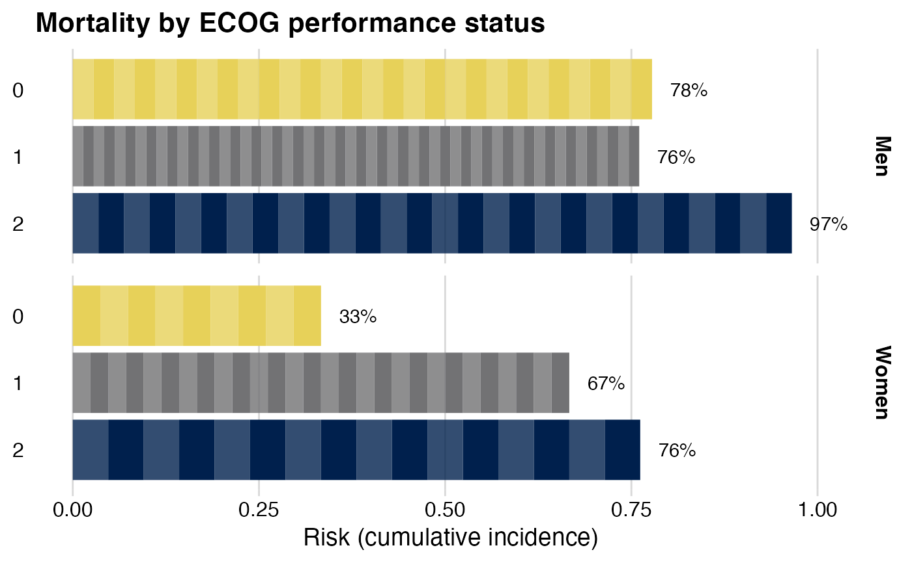

Plot bars of proportions that consist of "bricks" showing individual observations.
brickchart(data, outcome, by, group, colors = NULL, guide = FALSE)
Arguments
| data | Data set. |
|---|---|
| outcome | Outcome expression, e.g., |
| by | Exposure variable. |
| group | Optional: Grouping variable, e.g., an effect modifier. |
| colors | Optional: Color list. Must be a |
| guide | Optional: Show legend? Defaults to |
Value
ggplot. Modify further with standard ggplot functions.
Examples
data(cancer, package = "survival") cancer <- cancer %>% tibble::as_tibble() %>% dplyr::mutate(sex = factor(sex, levels = 1:2, labels = c("Men", "Women"))) cancer %>% dplyr::filter(ph.ecog < 3) %>% # drop missing/near-empty categories brickchart(outcome = status == 2, by = ph.ecog)cancer %>% dplyr::filter(ph.ecog < 3) %>% brickchart(outcome = status == 2, by = ph.ecog, group = sex, guide = TRUE) + # show color legend # Modify graph with standard ggplot functions # Refer to axes before flipping x <-> y. Here, y is horizontal: ggplot2::labs(y = "Risk (cumulative incidence)", fill = "ECOG status", # Color label title = "Mortality by ECOG performance status") + # Themes refer to axes as shown--'y' is now vertical ggplot2::theme(axis.title.y = ggplot2::element_blank())